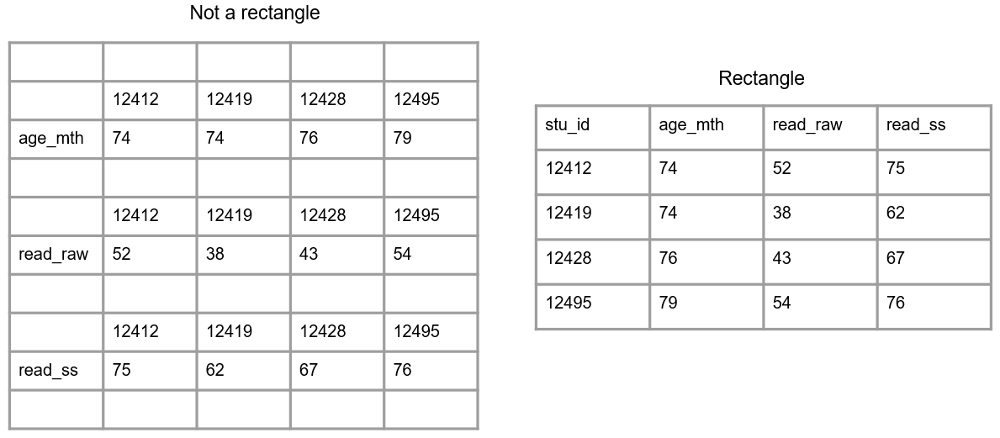

scores <- c(7,8,8,10,6,9,5,9,8)
round(mean(scores), digits = 2)[1] 7.78tidyverse 
… an opinionated collection of R packages designed for data science. All packages share an underlying design philosophy, grammar, and data structures. Its primary goal is to facilitate a conversation between a human and a computer about data …
Wickham et al. (2019)
Welcome to the tidyverse
https://www.tidyverse.org/
For the repeated tasks in of nearly every project: data import, tidying, manipulation, visualization, and programming
Designed for easier engagement with additional pieces of the larger ecosystem
Çetinkaya-Rundel et al. (2021)
An educator’s perspective of the tidyverse
To perform multiple operations in sequence:
Nested code (results evaluated from the inside out)
Intermediate objects (assign objects with intermediate results and pass on to the next function in a sequence)
Pipes (structure sequential operations left-to-right)
scores <- c(7,8,8,10,6,9,5,9,8)
round(mean(scores), digits = 2)[1] 7.78mn_scrs <- mean(scores)
round(mn_scrs, digits = 2)[1] 7.78Left Hand Side
(LHS)
pipe operator
%>% or |>
Right Hand Side
(RHS)
Take an object on the Left Hand Side of the pipe and insert it into a function as an argument on the Right Hand Side
* By default, LHS is placed as the first argument in the call
Minimize the need for intermediate objects and nested code
Make code readable
Easy to add or remove steps
Insert with
ctrl + shift + M
Adolfo Álvarez (2021)
The (updated) history of the pipe operator in R
library(magrittr)
scores %>%
mean() %>%
round(digits=2)[1] 7.78scores %>%
mean %>%
round(digits=2)[1] 7.78LHS |> RHS(argument = 12)
becomes
RHS(LHS, argument = 12)
A modern implementation of data.frames
Implemented across the tidyverse through 📦 tibble
tibble(
x = c("a", "b", "c"),
y = c(1, 2, 3)
)# A tibble: 3 × 2
x y
<chr> <dbl>
1 a 1
2 b 2
3 c 3tibbles are the shared rectangular data object for all tidyverse packages. However:
data.frame in ➡️ data.frame out
tibble in ➡️ tibble out
create a new object ➡️ tibble out
Default function outputs
Coerce other objects with as_tibble()
Build from scratch with tibble()
To avoid ambiguity:
No row names
Variable names untouched
Character columns not treated as factors
Complete variable names needed for subsetting with $
$my_df <- data.frame(letters=c("A","B","C"),
numbers=c(4,5,6))
my_df$let[1] "A" "B" "C"my_tib <- tibble(letters=c("A","B","C"),
numbers=c(4,5,6))
my_tib$letWarning: Unknown or uninitialised column: `let`.NULLmy_tib$letters [1] "A" "B" "C"For brevity, tibbles printed on the console show:
First 10 rows
How many rows and columns are not shown
As many columns as can fit on the console width
Variable types
Rounding and highlighting for numeric variables

# A tibble: 6 × 7
Name Role Year Travel.Type Trip.Purpose Cost Country
<chr> <chr> <int> <chr> <chr> <int> <chr>
1 Jane Michaels PI 2019 National Field Work 1000 UK
2 Jane Michaels PI 2019 National Field Work 2000 UK
3 Jane Michaels PI 2019 National Conference 1000 UK
4 Jane Michaels PI 2019 National Workshop 1000 UK
5 Jane Michaels PI 2019 International Conference 3000 USA
6 Raul J Student 2019 National Field Work 0 UK Easier to import and manipulate
Less prone to (non-replicable) errors
Good data organization helps us when we produce data, and also to identify and solve problems in existing data
Chapter 3. Data Organization
Data Management in Research
Crystal Lewis
Consistency in names, layouts, abbreviations, units, etc.
Good names
Rectangular layouts
Openscapes (2020)
Tidy data illustrated
Broman and Woo (2018)
Organizing data in spreadsheets
Verde Arregoita et al. (2018)
Good practices for sharing analysis-ready data…

Find the inconsistencies

Each row has the same number of columns
Each column has the same number of rows
Equal-height columns give a rectangular shape to the data frame

Davis Vaughan (2018)
Tidying Excel cash flow spreadsheets

An accessible reformulation of existing principles and definitions from statistics and computer science, to ultimately help us structure our data for usability.
Wickham (2014)
Tidy Data - Journal of Statistical Software
Arranged in a 2D data matrix with rows and columns
Rows correspond to observations
Columns correspond to variables
One value per cell
Wickham (2014)
Tidy Data - Journal of Statistical Software


Easy to reshape into other structures after cleaning or transforming


Variables feed directly into model specifications and plotting parameters.
Tidy data is more repetitive, often takes up more space than other more condensed representations
Not ideal for data entry, or for tables that will be embedded in a text document
Use indicator variables instead of encoding information into an existing value.

Not recorded, not applicable, lost in transcription, etc.
Missing data are still data
In R we use NA, a special logical constant that denotes missing values
Code NA values consistently (if done consistently, blank cells are OK)
Avoid ambiguity
Are data known to be missing, or was a value intentionally left blank?
Avoid empty cells as padding to align values, or for aesthetic or layout purposes.
Avoid NA values in column headers

| X | X1 | X2 | min_Score | AVERAGE.SCORE |
|---|---|---|---|---|
| UMN | EAST | A | 7.7 | 7.701 |
| UV | WEST | B | 8.9 | 8.890 |
| UNLV | EAST | C | 9.2 | 9.199 |
More difficult to remember and specify
Do not sort well
| university | coast | division | min_score | avg_score |
|---|---|---|---|---|
| UMN | EAST | A | 7.7 | 7.701 |
| UV | WEST | B | 8.9 | 8.890 |
| UNLV | EAST | C | 9.2 | 9.199 |
| X | X1 | X2 | min | AVERAGE |
|---|---|---|---|---|
| NA | NA | NA | Score | SCORE |
| UMN | EAST | A | 7.7 | 7.701 |
| UV | WEST | B | 8.9 | 8.89 |
| UNLV | EAST | C | 9.2 | 9.199 |
Variable names appear in >1 rows
Header fragments mixed with data
Separators become implicit
NAs introduced
📦 dplyr
📦 tidyr
Flexible and powerful
dplyr functionsIntuitive, user-friendly functions for common data manipulation tasks:
Subset columns
Subset rows
Create or modify columns
Each function does one only thing, but does it well
| cntry | species | threatened | region |
|---|---|---|---|
| Indonesia | 670 | 191 | Asia |
| Brasil | 648 | 80 | America |
| China | 551 | 73 | Asia |
| Mexico | 523 | 96 | America |
| Peru | 467 | 53 | America |
| Congo | 430 | 15 | Africa |
| India | 412 | 93 | Asia |
| Kenya | 376 | 30 | Africa |
| Argentina | 374 | 38 | America |
| Ecuador | 372 | 47 | America |
| Venezuela | 363 | 35 | America |
| Tanzania | 359 | 41 | Africa |
mcountries <-
tibble::tribble(
~cntry, ~species, ~threatened, ~region,
"Indonesia", 670L, 191L, "Asia",
"Brasil", 648L, 80L, "America",
"China", 551L, 73L, "Asia",
"Mexico", 523L, 96L, "America",
"Peru", 467L, 53L, "America",
"Congo", 430L, 15L, "Africa",
"India", 412L, 93L, "Asia",
"Kenya", 376L, 30L, "Africa",
"Argentina", 374L, 38L, "America",
"Ecuador", 372L, 47L, "America",
"Venezuela", 363L, 35L, "America",
"Tanzania", 359L, 41L, "Africa"
)select()mcountries %>%
select(cntry,
threatened) %>%
head(4)# A tibble: 4 × 2
cntry threatened
<chr> <int>
1 Indonesia 191
2 Brasil 80
3 China 73
4 Mexico 96mutate()mcountries %>%
select(cntry, threatened) %>%
mutate(logthreat = log(threatened)) %>%
head(5)# A tibble: 5 × 3
cntry threatened logthreat
<chr> <int> <dbl>
1 Indonesia 191 5.25
2 Brasil 80 4.38
3 China 73 4.29
4 Mexico 96 4.56
5 Peru 53 3.97We can control where the new column will appear with .before and .after
filter()Keep only the rows that meet a condition
mcountries %>%
select(cntry, species, threatened) %>%
filter(threatened > 75)# A tibble: 4 × 3
cntry species threatened
<chr> <int> <int>
1 Indonesia 670 191
2 Brasil 648 80
3 Mexico 523 96
4 India 412 93rename()New name first then target column
mcountries %>%
rename(pais=cntry,
especies=species,
amenazadas=threatened) %>%
head(3)# A tibble: 3 × 4
pais especies amenazadas region
<chr> <int> <int> <chr>
1 Indonesia 670 191 Asia
2 Brasil 648 80 America
3 China 551 73 Asia relocate()Use .before or .after to define placement
mcountries %>%
relocate(region, .after=cntry) %>%
head(3)# A tibble: 3 × 4
cntry region species threatened
<chr> <chr> <int> <int>
1 Indonesia Asia 670 191
2 Brasil America 648 80
3 China Asia 551 73.after can also refer to positions
relocatedAf <-
mcountries %>%
relocate(region, .after=cntry) %>%
filter(region=="Africa")Export with a write function, providing an object and a file path e.g., write.csv(relocatedAf,"Africa.csv")
NA values| ID | Institution | year | ZIP.code | Highest.degree.offered | County.name | Religious.affiliation |
|---|---|---|---|---|---|---|
| NA | NA | NA | NA | NA | NA | NA |
| 100663 | University of Alabama at Birmingham | NA | 35294-0110 | Doctor's degree | NA | Not applicable |
| 100690 | Amridge University | NA | NA | Doctor's degree | NA | Churches of Christ |
| 100706 | University of Alabama in Huntsville | NA | 35899 | Doctor's degree | NA | Not applicable |
| NA | NA | NA | NA | NA | NA | NA |
| 100751 | The University of Alabama | NA | 35487-0166 | Doctor's degree | NA | Not applicable |
| NA | NA | NA | NA | NA | NA | NA |
| NA | NA | NA | NA | NA | NA | NA |
| 101541 | Judson College | NA | 36756 | Bachelor's degree | NA | NA |
| 101587 | University of West Alabama | NA | 35470 | Master's degree | NA | Not applicable |
| NA | NA | NA | NA | NA | NA | NA |
| 101693 | University of Mobile | NA | 36613-2842 | Master's degree | NA | Southern Baptist |
universities <-
tibble::tribble(
~ID, ~Institution, ~year, ~ZIP.code, ~Highest.degree.offered, ~County.name, ~Religious.affiliation,
NA, NA, NA, NA, NA, NA, NA,
100663L, "University of Alabama at Birmingham", NA, "35294-0110", "Doctor's degree", NA, "Not applicable",
100690L, "Amridge University", NA, NA, "Doctor's degree", NA, "Churches of Christ",
100706L, "University of Alabama in Huntsville", NA, "35899", "Doctor's degree", NA, "Not applicable",
NA, NA, NA, NA, NA, NA, NA,
100751L, "The University of Alabama", NA, "35487-0166", "Doctor's degree", NA, "Not applicable",
NA, NA, NA, NA, NA, NA, NA,
NA, NA, NA, NA, NA, NA, NA,
101541L, "Judson College", NA, "36756", "Bachelor's degree", NA, NA,
101587L, "University of West Alabama", NA, "35470", "Master's degree", NA, "Not applicable",
NA, NA, NA, NA, NA, NA, NA,
101693L, "University of Mobile", NA, "36613-2842", "Master's degree", NA, "Southern Baptist"
)library(janitor)
library(naniar) # useful but not used in today's sessionRemove rows or columns with all NA
library(janitor)
universities %>%
remove_empty(c("rows","cols"))# A tibble: 7 × 5
ID Institution ZIP.code Highest.degree.offered Religious.affiliation
<int> <chr> <chr> <chr> <chr>
1 100663 University of Al… 35294-0… Doctor's degree Not applicable
2 100690 Amridge Universi… <NA> Doctor's degree Churches of Christ
3 100706 University of Al… 35899 Doctor's degree Not applicable
4 100751 The University o… 35487-0… Doctor's degree Not applicable
5 101541 Judson College 36756 Bachelor's degree <NA>
6 101587 University of We… 35470 Master's degree Not applicable
7 101693 University of Mo… 36613-2… Master's degree Southern Baptist Find rows in column that are NA
universities %>% filter(is.na(ZIP.code))# A tibble: 6 × 7
ID Institution year ZIP.code Highest.degree.offered County.name
<int> <chr> <lgl> <chr> <chr> <lgl>
1 NA <NA> NA <NA> <NA> NA
2 100690 Amridge University NA <NA> Doctor's degree NA
3 NA <NA> NA <NA> <NA> NA
4 NA <NA> NA <NA> <NA> NA
5 NA <NA> NA <NA> <NA> NA
6 NA <NA> NA <NA> <NA> NA
# ℹ 1 more variable: Religious.affiliation <chr>Negate condition and discard NAs in variable
universities %>% filter(!is.na(ZIP.code))# A tibble: 6 × 7
ID Institution year ZIP.code Highest.degree.offered County.name
<int> <chr> <lgl> <chr> <chr> <lgl>
1 100663 University of Alabam… NA 35294-0… Doctor's degree NA
2 100706 University of Alabam… NA 35899 Doctor's degree NA
3 100751 The University of Al… NA 35487-0… Doctor's degree NA
4 101541 Judson College NA 36756 Bachelor's degree NA
5 101587 University of West A… NA 35470 Master's degree NA
6 101693 University of Mobile NA 36613-2… Master's degree NA
# ℹ 1 more variable: Religious.affiliation <chr>replace_na() from tidyr
universities %>%
mutate(ZIP.code=
replace_na(ZIP.code,"pending")) %>% head(4)# A tibble: 4 × 7
ID Institution year ZIP.code Highest.degree.offered County.name
<int> <chr> <lgl> <chr> <chr> <lgl>
1 NA <NA> NA pending <NA> NA
2 100663 University of Alabam… NA 35294-0… Doctor's degree NA
3 100690 Amridge University NA pending Doctor's degree NA
4 100706 University of Alabam… NA 35899 Doctor's degree NA
# ℹ 1 more variable: Religious.affiliation <chr>NAuniversities %>%
remove_empty("cols") %>%
na.omit()# A tibble: 5 × 5
ID Institution ZIP.code Highest.degree.offered Religious.affiliation
<int> <chr> <chr> <chr> <chr>
1 100663 University of Al… 35294-0… Doctor's degree Not applicable
2 100706 University of Al… 35899 Doctor's degree Not applicable
3 100751 The University o… 35487-0… Doctor's degree Not applicable
4 101587 University of We… 35470 Master's degree Not applicable
5 101693 University of Mo… 36613-2… Master's degree Southern Baptist data() loads or lists available datasets in our installed packages
data() with no arguments shows every dataset currently available
We can also specify which package we want to examine for bundled data:
data(package="ggplot2")
data(package="datasets")
data(package="tidyr")
We can use data() to load a particular dataset from a package (quoted or unquoted both work)
Load the relevant package first!
library(ggplot2)
data(economics)Load the penguins dataset from the palmerpenguins package
Create a subset of the data with only species, island, and flipper_length_mm
How many individuals have flippers > 195 mm in length?
Create a new column with the flipper length in inches, place it before the column with the length in mm
across() multiple columnsacross()
filter or mutate multiple columns simultaneously
By position (not recommended), name, or type
Compound selections of columns
(e.g. factor columns that contain “month” in their name)
across() arguments:.cols Columns to transform
.fns Function to apply to each of the selected columns
Expects a function, so function name and arguments can be passed separately (new preference is for anonymous functions, which we will cover later)
mcountries %>%
mutate(across(c(species, threatened), `*`, 2)) %>%
head(3)Warning: There was 1 warning in `mutate()`.
ℹ In argument: `across(c(species, threatened), `*`, 2)`.
Caused by warning:
! The `...` argument of `across()` is deprecated as of dplyr 1.1.0.
Supply arguments directly to `.fns` through an anonymous function instead.
# Previously
across(a:b, mean, na.rm = TRUE)
# Now
across(a:b, \(x) mean(x, na.rm = TRUE))# A tibble: 3 × 4
cntry species threatened region
<chr> <dbl> <dbl> <chr>
1 Indonesia 1340 382 Asia
2 Brasil 1296 160 America
3 China 1102 146 Asia .cols is a vector with the names of the two columns we’re interested in
* is the function to apply, 2 is the function argument
To specify sets of columns, there are a number of useful helper functions that we can use alongside or instead of the across function.
everything()Matches all variables
mcountries %>%
mutate(across(everything(), as.character)) %>%
head(3)# A tibble: 3 × 4
cntry species threatened region
<chr> <chr> <chr> <chr>
1 Indonesia 670 191 Asia
2 Brasil 648 80 America
3 China 551 73 Asia !Take the complement of a set of variables (negate a selection)
mcountries %>%
select(!c(region,threatened)) %>% head()# A tibble: 6 × 2
cntry species
<chr> <int>
1 Indonesia 670
2 Brasil 648
3 China 551
4 Mexico 523
5 Peru 467
6 Congo 430where()Selects variables for which a predicate function returns TRUE
e.g. subset or transform all numeric variables, determined by
is.numeric()
mcountries %>%
mutate(across(where(is.numeric), log2)) %>% slice(1:3)# A tibble: 3 × 4
cntry species threatened region
<chr> <dbl> <dbl> <chr>
1 Indonesia 9.39 7.58 Asia
2 Brasil 9.34 6.32 America
3 China 9.11 6.19 Asia matches()Match variable names with a regular expression
e.g. drop variables with the pattern ‘cn.r’ in their name
mcountries %>%
mutate(across(matches("cn.r"), toupper)) %>% head# A tibble: 6 × 4
cntry species threatened region
<chr> <int> <int> <chr>
1 INDONESIA 670 191 Asia
2 BRASIL 648 80 America
3 CHINA 551 73 Asia
4 MEXICO 523 96 America
5 PERU 467 53 America
6 CONGO 430 15 Africa :Select a range of consecutive variables
mcountries %>%
select(cntry:threatened) %>% head()# A tibble: 6 × 3
cntry species threatened
<chr> <int> <int>
1 Indonesia 670 191
2 Brasil 648 80
3 China 551 73
4 Mexico 523 96
5 Peru 467 53
6 Congo 430 15-Exclude variables
(return all elements except the one preceded by the subtraction operator)
mcountries %>%
select(-region) %>% head(3)# A tibble: 3 × 3
cntry species threatened
<chr> <int> <int>
1 Indonesia 670 191
2 Brasil 648 80
3 China 551 73Square root (sqrt()) of species and threatened
mcountries %>%
mutate(across(c(species, threatened), sqrt)) %>%
head()# A tibble: 6 × 4
cntry species threatened region
<chr> <dbl> <dbl> <chr>
1 Indonesia 25.9 13.8 Asia
2 Brasil 25.5 8.94 America
3 China 23.5 8.54 Asia
4 Mexico 22.9 9.80 America
5 Peru 21.6 7.28 America
6 Congo 20.7 3.87 Africa sqrt()) of all numeric variablesmcountries %>%
mutate(across(where(is.numeric), sqrt)) %>%
head()# A tibble: 6 × 4
cntry species threatened region
<chr> <dbl> <dbl> <chr>
1 Indonesia 25.9 13.8 Asia
2 Brasil 25.5 8.94 America
3 China 23.5 8.54 Asia
4 Mexico 22.9 9.80 America
5 Peru 21.6 7.28 America
6 Congo 20.7 3.87 Africa Keep only columns of type numeric
mcountries %>%
select(where(is.numeric)) %>%
head()# A tibble: 6 × 2
species threatened
<int> <int>
1 670 191
2 648 80
3 551 73
4 523 96
5 467 53
6 430 15Human-readable
Easier entry
Easier interactive editing
Often meets Tidy Data principles
Analysis-ready
Maps well to plot axes and aesthetics

tidyr
wide to long: pivot_longer()
pivot_longer(data, cols, names_to, values_to)
long to wide: pivot_wider()
pivot_longer(data, cols, names_from, values_from)| area_type | district | coffee_shops | fast_food | fish_chips |
|---|---|---|---|---|
| Residential | South | 2 | 3 | 1 |
| Commercial | North | 12 | 6 | 4 |
| Suburban | South | 2 | 4 | 3 |
| Rural | East | 0 | 2 | 0 |
dining <-
tibble::tribble(
~area_type, ~district, ~coffee_shops, ~fast_food, ~fish_chips,
"Residential", "South", 2L, 3L, 1L,
"Commercial", "North", 12L, 6L, 4L,
"Suburban", "South", 2L, 4L, 3L,
"Rural", "East", 0L, 2L, 0L
)Variables:
area type, district, type of restaurant, number of restaurants
dining_long <- dining %>%
pivot_longer(
cols = c(coffee_shops, fast_food, fish_chips),
names_to = "restaurant_type",
values_to = "n_restaurants")cols Which columns have data in their names
names_to Name for the new column to be created from cols
values_to Name of the column to be created from the contents of the cells in cols
dining %>%
pivot_longer(
cols = c(coffee_shops, fast_food, fish_chips),
names_to = "restaurant_type",
values_to = "n_restaurants")dining %>%
pivot_longer(
cols = c(coffee_shops, fast_food, fish_chips),
names_to = "restaurant_type",
values_to = "n_restaurants")# A tibble: 12 × 4
area_type district restaurant_type n_restaurants
<chr> <chr> <chr> <int>
1 Residential South coffee_shops 2
2 Residential South fast_food 3
3 Residential South fish_chips 1
4 Commercial North coffee_shops 12
5 Commercial North fast_food 6
6 Commercial North fish_chips 4
7 Suburban South coffee_shops 2
8 Suburban South fast_food 4
9 Suburban South fish_chips 3
10 Rural East coffee_shops 0
11 Rural East fast_food 2
12 Rural East fish_chips 0dining_long %>%
pivot_wider(names_from = restaurant_type,
values_from = n_restaurants)names_from Which columns’ values will be used for new column names
values_from Which column has the cell values for the new output columns
dining_long %>%
pivot_wider(names_from = restaurant_type,
values_from = n_restaurants)# A tibble: 4 × 5
area_type district coffee_shops fast_food fish_chips
<chr> <chr> <int> <int> <int>
1 Residential South 2 3 1
2 Commercial North 12 6 4
3 Suburban South 2 4 3
4 Rural East 0 2 0Load the “gene_expression.csv” file This table contains simulated gene expression values (arbitrary units) for five different fish measured at six time points and sampled from two tissues.
Pivot the data (wide to long and back to wide)